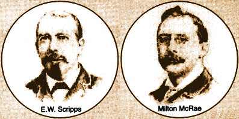
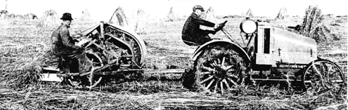

|  |
| |
In 1917, the world was battling World War I. In this country, industrialists, just beset with the minimum wage and graduated income tax, were sent into a tailspin. Progressive ideals were lost as the United States took its place on the world stage in the struggle for commercial supremacy.
It is against this backdrop that the first 20th Century hemp drama was played.
The story begins soon after the release of Bulletin 404 (see Bulletin 404). Near San Diego, California, a 50-year-old German immigrant named George Schlichten had been working on a simple yet brilliant invention. Schlichten had spent 18 years and $400,000 on the decorticator, a machine that could strip the fiber from nearly any plant, leaving the pulp behind. To build it, he had developed an encyclopedic knowledge of fibers and paper making. His desire was to stop the felling of forests for paper, which he believed to be a crime. His native Germany was well advanced in forestry and Schlichten knew that destroying forests meant destroying needed watersheds.
Henry Timken, a wealth industrialist and inventor of the roller bearing, got wind of Schlichten’s invention and went to meet the inventor in February of 1917. Timken saw the decorticator as a revolutionary discovery that would improve conditions for mankind. Timken offered Schlichten to grow 100 acres of hemp on his ranch in the fertile farmlands of Imperial Valley, California, just east of San Diego, so that Schlichten could test his invention.
Shortly thereafter, Timken met with the newspaper giant E.W. Scripps, and his long-time associate Milton McRae, at Miramar, Scripps’ home in San Diego. Scripps, then 63, had accumulated the largest chain of newspapers in the country. Timken hoped to interest Scripps in making newsprint from hemp hurds.

Turn-of-the-century newspaper barons needed huge amounts of paper to deliver their swelling circulations. Nearly 30 percent of the four million tons of paper manufactured in 1909 was newsprint; by 1914 the circulation of daily newspapers had increased by 17% over 1909 figures to more than 28 million copies.1
1. World Almanac, 1914, p. 235; 1917
By 1917, the price of newsprint was rapidly rising, and McRae, who had been investigating owning a paper mill since 1904,2 was concerned.
2. Forty Years in Newspaperdom, Milton McRae, 1924, Bretano’s NY
In May, after further meetings with Timken, Scripps asked McRae to investigate the possibility of using the decorticator in the manufacture of newsprint.
McRae quickly became excited about the plan. He called the decorticator “a great invention…[which] will not only render great service to this country, but it will be very profitable financially…[it] may revolutionize existing conditions.” On August 3rd, as harvest time neared, a meeting was arranged between Schlichten, McRae, and newspaper manager Ed Chase.
Without Schlichten’s knowledge, McRae had his secretary record the three-hour meeting stenographically. The resulting document, the only record of Schlichten’s voluminous knowledge found to date, is reprinted fully in Appendix I of the paper version of this book.
Schlichten had thoroughly studied many kinds of plants for paper, among them corn, cotton, yucca, and Espana baccata. Hemp seemed to be his favorite:
“The hemp hurd is a practical success and will make paper of a higher quality than ordinary news stock,” he said.
His hemp paper was even better than that produced for USDA Bulletin 404, he claimed, because the decorticator eliminated the retting process, leaving behind short fibers and a natural glue that held the paper together.
At 1917 levels of hemp production Schlichten anticipated making 50,000 tons of paper yearly at a retail price of $25 a ton. This was less than 50% of the price of newsprint at the time! And every acre of hemp turned to paper, Schlichten added, would preserve five acres of forest.
McRae was very impressed by Schlichten. The man who dined with presidents and captains of industry wrote to Timken, “I was to say without equivocation that Mr. Schlichten impressed me as being a man of great intellectuality and ability; and so far as I can see, he has created and constructed a wonderful machine.” He assigned Chase to spend as much time as he could with Schlichten and prepare a report.

By August, after only three months of growth, Timken’s hemp crop had grown to its full height—14 feet!—and he was highly optimistic about its prospects. He hoped to travel to California to watch the crop being decorticated, seeing himself as a benefactor to mankind who would enable people to work shorter hours and have more time for “spiritual development.”
Scripps, on the other hand, was not in an optimistic frame of mind. He had lost faith in a government that he believed was leading the country to financial ruin over the war, and that would take 40% of his profits in income tax. In an August 14 letter to his sister, Ellen, he said:
“When Mr. McRae was talking to me about the increase in the price of white paper that was pending, I told him I was just fool enough not to be worried about a thing of that kind.” The price of paper was expected to rise 50%, costing Scripps his entire year’s profit of $1,125,00! Rather than develop a new technology, he took the easy way out: The Penny Press Lord simply planned to raise the price of his papers from one cent to two cents.
On August 28, Ed Chase sent his full report to Scripps and McRae. The younger man also was taken with the process: “I have seen a wonderful, yet simple, invention. I believe it will revolutionize many of the processes of feeding, clothing, and supplying other wants of mankind.”
Chase witnessed the decorticator produce seven tons of hemp hurds in two days. At full production, Schlichten anticipated each machine would produce five tons per day. Chase figured hemp could easily supply Scripps’ west coast papers, with leftover pulp for side businesses. He estimated the newsprint would cost between $25 an $35 a ton, and proposed asking an east-coast paper mill to experiment for them.

An early hemp processing machine, c. 1930. Its many fluted rollers crushed the stalks separating the hemp fiber from the woody portion of the plants.
McRae, however, seems to have gotten the message that his boss was no longer very interested in making paper from hemp. His response to Chase’s report is cautions: “Much will be determined as to the practicability by the cost of transportation, manufacture, etc., etc., which we cannot ascertain without due investigation.” Perhaps when his ideals met with the hard work of developing them, the semi-retired McRae backed off.
By September, Timken’s crop was producing one ton of fibre and four tons of hurds per acre, and he was trying to interest Scripps in opening a paper mill in San Diego. McRae and Chase traveled to Cleveland and spent two hours convincing Timken that, while hemp hurds were usable for other types of paper, they could not be made into newsprint cheaply enough. Perhaps the eastern mill at which they experimented wasn’t encouraging-after all, they were set up to make wood pulp paper.
By this time Timken, too, was hurt by the wartime economy. He expected to pay 54% income tax and was trying to borrow $2 million at 10% interest to retool for war machines. The man who a few weeks earlier could not wait to get to California no longer expected to go West at all that winter. He told McRae, “I think I will be too damn busy in this section of the country looking after business.”
The decorticator resurfaced in the thirties, when it was touted as the machine that would make hemp a “Billion Dollar Crop” in articles in Mechanical Engineering and Popular Mechanics.* (Until the ninth edition of The Emperor, the decorticator was believed to be a new discovery at that time.) Once again, the burgeoning hemp industry was halted, this time by the Marijuana Tax Act of 1937.
*See article reprinted in Chapter 3.
—Ellen Komp
A full account of the story, with reproductions of the letters that reveal it,3 is in the Appendix of the paper version of this book.
3. Scripps Archives University of Ohio, Athens, OH; and Ellen Browing Scripps Archives, Denison Library, Claremont College, Claremont, CA
1. World Almanac, 1914, p. 235; 1917
2. Forty Years in Newspaperdom, Milton McRae, 1924 Bretano’s NY
3. Scripps Archives University of Ohio, Athens, OH; and Ellen Browing Scripps Archives, Denison Library, Claremont College, Claremont, CA
San Diego, Calif.,
August 28, 1917
Mr. E.W. Scripps
Mr. Milton A. McRae
Gentlemen:
I have spent many hours with G. W. Schlichten, the inventor of the decorticating machine. Friday and Saturday last I spent with him at the Timken Ranch in Imperial Valley, while a portion of his first crop of hemp was run through his machine. I have seen a wonderful, yet simple, invention. I believe it will revolutionize many of the processes of feeding, clothing and supplying other wants of mankind.
Heretofore, before the fiber could be extracted from hemp, the hemp stalks had to lie on the ground for months to be "retted." The fiber is then extracted by hand of by certain crude machines. To make a long story short, the fiber from retted hemp is of poorer quality as to strength and so expensive to get into proper shape, that Kentucky hemp is quoted in the Fiber Trade Journals as 16 per lb. ($320.00 per ton). The fiber having been extracted from hemp, the residue consists chiefly of "hurds." Hemp hurds are the woody, inner portion of the hemp stalk broken into pieces in removing the fiber. The old machines, handling retted hemp, turn out only small amounts of fiber and small and scattered heaps of hurds. Only about seven thousand tons of these hurds have been available in the United
—end of extract from letter—
the authorized on-line version of Jack Herer’s “The Emperor Wears No Clothes”
| previous page | Chapter 2 | next page |
|
 |
 |
 |
 |